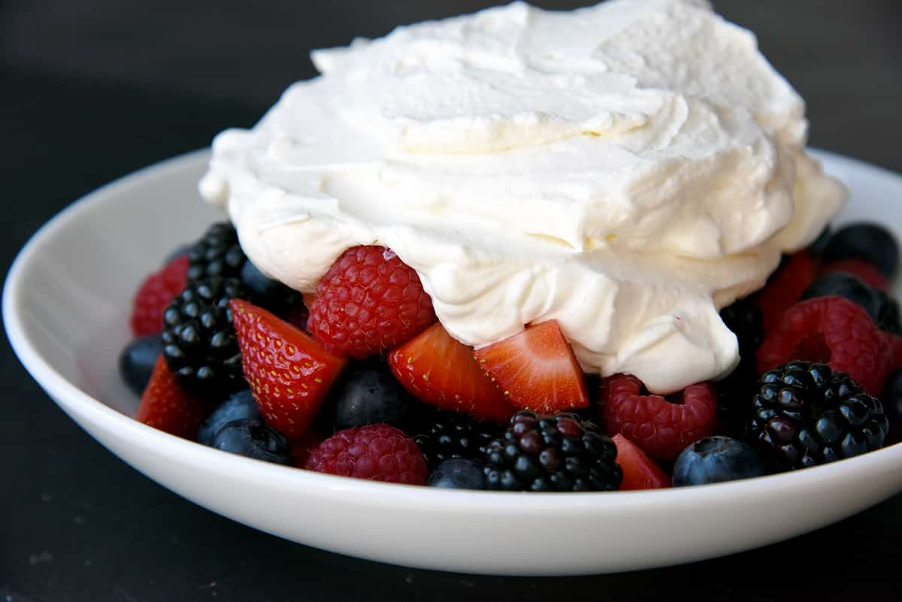

Homepage
Frozen fruit
My recipe for frozen fruit

This is a great substitute for ice cream. It is healthier and for me it is tastier. Although, people with sensitive teeth might hate it.
Ingredients
- Frozen berries
- Frozen strawberries
- Frozen sour cherry
- Whip cream
Instructions
- Wash the fruit with hot water and put it in a bowl
- Add whip cream on top and eat it with a fork.
- Enjoy your natural ice cream that is healthy and delicious.